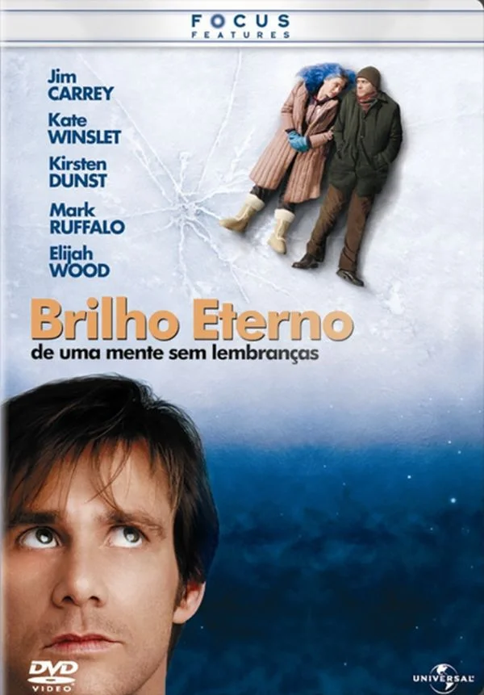

Green Revolution
"Queria que tivesse ficado"

Joel e Clementine formavam um casal que durante anos tentaram fazer com que o relacionamento desse certo. Desiludida com o fracasso, Clementine decide esquecer Joel para sempre e, para tanto, aceita se submeter a um tratamento experimental, que retira de sua memória os momentos vividos com ele. Após saber de sua atitude Joel entra em depressão, frustrado por ainda estar apaixonado por alguém que quer esquecê-lo. Decidido a superar a questão, Joel também se submete ao tratamento experimental. Porém ele acaba desistindo de tentar esquecê-la e começa a encaixar Clementine em momentos de sua memória os quais ela não participa.
As “eras” da Clementine são as diferentes fases emocionais que ela atravessa ao longo de Brilho Eterno de uma Mente sem Lembranças, representadas pelas constantes mudanças na cor do seu cabelo. Mais do que estilo, cada cor funciona como um reflexo de sua personalidade intensa, impulsiva e mutável, marcando momentos de reinvenção, desejo de liberdade e tentativa de escapar da dor. No filme, essas transformações ajudam a contar a passagem do tempo e simbolizam a forma como Clementine vive o amor, a memória e a própria identidade de maneira inquieta e profundamente humana.
"Queria que tivesse ficado"
"Eu te conto tudo, até mesmo a coisa mais constrangedora. Você não cofia em mim"
"Não sou um conceito, Joe. Sou uma garota perturbada à procura da própria paz de espírito"